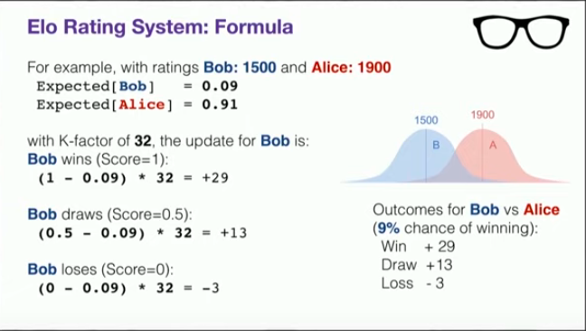
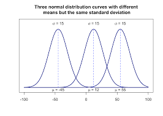

The wikipedia page describes ELO as
The Elo[a] rating system is a method for calculating the relative skill levels of players in zero-sum games such as chess. It is named after its creator Arpad Elo, a Hungarian-American physics professor.
If you google how ELO works, you are usually presented with the following two equations
\[ P(A \text{ beats } B) = \frac{10^{R_A/400}}{10^{R_A/400} + 10^{R_B/400}}\]
where \(R_A\) and \(R_B\) are the ELO ratings of player A and player B and \(P(A \text{ beats } B)\) is the probability that A beats B. Once player A actually plays player B, we get one of the following realisations:
Once this game is finished A’s ratings are updated using the formula
\[ R_{new} = R_{old} + \Big(X - P(A \text{ beats } B)\Big)*K\] where K is usually 32.
Taken from talk

Shown above is an example of two players with ELO ratings 1500 and 1900 and how their scores would change if they played against each other.
One may verify these equations from Mark Glickmans detailed survey of chess rankings. If one were to read the entire survey, then one would learn that Arpad Elo assumed that player A’s score came from a Gaussian Distribution with mean \(R_A\) and a constant variance for all players. Thus the the probability above is just the probability of A drawing a bigger number than B. However, if you have ever seen the normal distribution, it is not clear why the above equation is true. Where is the \(400\) coming from? Why is the exponent in base 10 - the pdf of the normal distribution has no sign of a base 10? It took me a while to work out how this formula comes out to be true. Gary A. Mamon’s document was very useful. This post is the complete derivation of where the above formula comes from. Spoiler alert: Contary to what conference talks and many other youtube explanations tell you, the above formula is NOT exactly the probability of one normal random variable being bigger than the other. In fact it is a close approximation to the first order approximation of the actual probability of two gaussian variables differing. Futhermore the approximation is only good when the two players are relatively equal.
This probability forum does a good job at what equation 1 means.
The key point about the Elo rating is that it is related to the log-odds of players winning games. It assumes that there is a relationship across players, so that (ignoring the possibility of draws) if Player B is 10 times as likely to beat Player A as Player A is to be beat Player 𝐵, and Player C is 10 times as likely to beat Player B as Player B is to beat Player C, then Player C is 100 times as likely to beat Player A as Player A is to beat Player C. The Elo rating is scaled so that (ignoring the possibility of draws) if Player B is 10 times as likely to beat Player A as Player A is to beat Player B then the Elo rating of Player B should be 400 higher than the Elo rating of Player A. Combining this with the earlier assumption has the result that, if Player C is 100 times as likely to beat Player A as Player A is to beat Player C, then the Elo rating of Player C should be 800 higher than the Elo rating of Player A: each linear increase in the difference of Elo ratings of 400 multiplies the odds of the better player winning by a factor of 10, so this is a logarithmic relationship.
The author of the post works the math out. The above exerpt is the following equation which is the same as our equation 1.
\[ 400\log_{10}\Big( \frac{ P(A \text{ beats } B)}{ P(B \text{ beats } A)} \Big) = R_A - R_B\]
As \(P(A \text{ beats } B) = 1 - P(B \text{ beats } A)\), if you re-arrange the above equation the math works out.
But this is \(NOT\) how Arpad Elo described his system.
In his original work, cited in Elo claimed that player x’s ability came from a normal distribution with mean \(R_x\) and constant standard deviation \(\sigma=200\). So if player A and player B met for a chess match. The outcome of the game could be modelled as the two of them drawing a number from their individual gaussian distributions. The one with the higher number wins. One could view the figure below as the rating distribution of 3 different players. A key assumption made was that all players have the same variance i.e. all players are equally consistent.

Under, this setting, What is the probability that \(A\) beats \(B\)?
\[\begin{align*} P(A \text{ beats } B) &= P(a > b) \\ &= P(a - b > 0) \end{align*}\]
where \(a \sim Normal(R_A, \sigma^2)\) and \(b \sim Normal(R_B, \sigma^2)\). The two players simply draw a number form their distrubutions, the bigger number is the winner. A useful property of gaussian random variables with different means \(R_A\) and \(R_B\) and same variance \(\sigma^2\), is that their difference is also a gaussian random variable with mean \(\Delta = R_A - R_B\) and variance \(2\sigma^2\). See for a proof. Let \(\delta = a - b\), and let \(x = P(A \text{ beats } B)\)
\[\begin{align*} P(A \text{ beats } B) &= P(\delta > 0) \\ x &= \int_{0}^{\infty} \frac{1}{2\sigma\sqrt{\pi}}e^{-\Big( \frac{\delta - \Delta}{2\sigma}\Big)^2}d\delta \\ &= \frac{1}{2}\Big[ 1 + e.r.f(\frac{2\Delta}{2\sigma})\Big] \end{align*}\]
where e.r.f is the error function. The last line is just using the CDF of a normal distribution, Solving for \(\Delta\), we get
\[ \Delta = 2\sigma (erf)^{-1}[2x -1]\] where \((erf)^{-1}\) is the inverse of the error function. Plugging in \(\sigma=200\) we get
\[ \Delta = 400(erf)^{-1}[2x -1]\] Ok now we have a 400 but there is still no base 10 or beautiful closed form expression that everyone claims to exist. Let us denote the difference in ELO rating obtained from equation 1, as \(\Delta_{log} = R_B - R_A\). We had
\[ \Delta_{log} = 400\log_{10}(\frac{x}{1-x})\] where \(x = P(A \text{ beats } B)\) as defined before.
What we are interested in knowing is how are \(\Delta_{log}\) and \(\Delta\) related. In chess players that play each other are mostly on the same skill level. So let us Consider what happens when players A and B are quite close to each other i.e \(\delta \approx 0\) and \(x \approx 1/2\).
To understand this, we use Taylor Series (MacLaurin) expansions centered at \(\delta=0\) of \(erf^{-1}\).
\[\begin{align*} erf^{-1}(z) &= \sum_{k=0}^{\infty} \frac{c_k}{2k+1}\Big(\frac{\sqrt{\pi}}{2}z\Big)^{2k+1} \\ &= \frac{1}{2}\sqrt{\pi}\Big( z + \frac{\pi}{12}z^3 + ... \Big) \\ \end{align*}\]
where c0 = 1 and \(c_k = \sum_{m=0}^{k-1} \frac{c_mc_{k-1-m}}{(m+1)(2m+1)}\). Substituting \(z = 2x -1\) in the above equation and taking the first order exansion we get
\[\Delta = 400\sqrt{\pi}(x - \frac{1}{2})\]
The Taylor expansion of \(f(x) = ln(\frac{x}{1-x})\) centered at 1/2 is the following:
\[\begin{align*} \Delta_{log} &= 400\log_{10}(\frac{x}{1-x})\\ &= \frac{400}{ln(10)}\sum_{n=0}^{\infty}\frac{f^{(n)}(a)}{n!}(x-a)^n \\ \end{align*}\]
The first order approximation is
\[ \Delta_{log} = \frac{1600}{ln(10)}(x - \frac{1}{2})\]
Now we have two very similar looking equations
\[ \Delta_{log} = \frac{1600}{ln(10)}(x - \frac{1}{2})\]
\[\Delta = 400\sqrt{\pi}(x - \frac{1}{2})\]
\(\Delta_{log} - \Delta = (x - \frac{1}{2})(709.0 - 694.9)\). There’s only a 2% difference when the players are closely matched. However when players are not nearly equal if we were to plot \(\Delta_{log}\) and \(\Delta\) the differences are grater than 10%. This is why its important in chess to have evenly matched players play against each other. A 2% difference accounts to 268 points on ELO scale. This is also why the equation used in practice is a decent approximation of what Elo suggested. However it is NOT the probability that one normal random variable is bigger than the other.